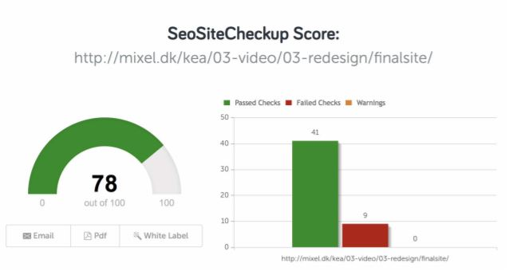

Der skulle produceres en kort digital video i Premiere omhandlende en virksomhed, baseret på et interview med denne. Grundlæggende principper som optage-og redigeringsteknik, billedkomposition og klippeteknik skulle tages i brug for at opfylde kravene om framings, establishments shots, lyd og grafiske elementer.
Ved både at foretage en BERT-test af det daværende site og det redesignede site og yderligere en 5 sekunderstest, kunne vi anvende den empiriske data om brugere og brugssituationer til at lave et bedre interaktionsdesign. Designvalget skulle baseres på virksomhedens målgruppe og der skulle laves tilhørende wireframes og layoutdiagram. Ved hjælp af de anvendte redskaber inden for koncept- og idéudvikling, analyse og design, blev der skabt en side der scorede 78 % i Seo testen.